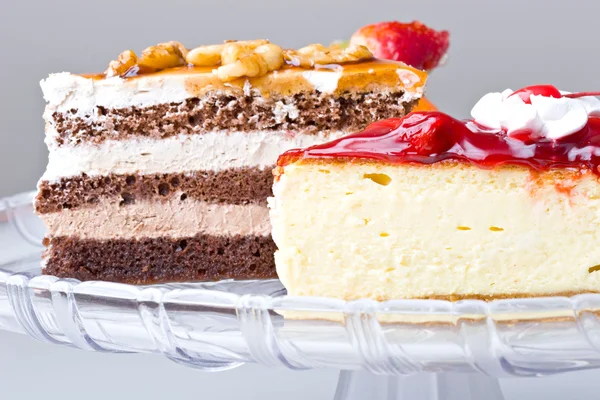
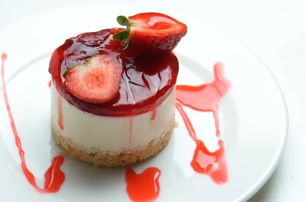

Ingredientes: Para a Calda: 1 xícara de açúcar 1/2 xícara de água Para o Pudim: 1 lata de leite condensado 2 latas de leite (use a lata de leite condensado como medida) 3 ovos 1 colher de sopa de essência de baunilha (opcional)
Modo de Preparo: Preparar a calda: Em uma panela, cozinhe açúcar e água em fogo médio, sem mexer, até ficar dourada. Despeje na forma de pudim, cobrindo o fundo e as laterais. Reserve. Preparar o pudim: No liquidificador, bata leite condensado, leite, ovos e essência de baunilha até homogêneo. Montar e cozinhar: Despeje a mistura na forma caramelizada. Cubra com papel alumínio e coloque em uma assadeira com água (banho-maria). Asse em forno pré-aquecido a 180°C por cerca de 1 hora, ou até firmar. Esfriar e servir: Deixe esfriar à temperatura ambiente e leve à geladeira por pelo menos 4 horas. Para desenformar, passe uma faca nas bordas e inverta em um prato.
Ingredientes: 200g de coco ralado (fresco ou desidratado) 1 lata de leite condensado 6 gemas 1/2 xícara de açúcar 1 colher de sopa de manteiga derretida 1 colher de chá de essência de baunilha (opcional)
Modo de Preparo: Preparar a mistura: Misture coco ralado, leite condensado, gemas, açúcar, manteiga derretida e essência de baunilha até obter uma massa homogênea. Untar as forminhas: Unte forminhas de empada ou silicone com manteiga e polvilhe açúcar. Distribuir a mistura: Despeje a mistura nas forminhas, preenchendo até a borda. Cozinhar: Coloque as forminhas em uma assadeira com água (banho-maria) e leve ao forno pré-aquecido a 180°C por cerca de 30 minutos, ou até firmes e dourados. Esfriar e servir: Retire do forno, deixe esfriar e desenforme com cuidado. Sirva gelado ou em temperatura ambiente.
Ingredientes: Para a Massa: 4 ovos 1 xícara de açúcar 1/2 xícara de manteiga derretida 1 xícara de farinha de trigo 1 colher de sopa de essência de baunilha 1 colher de chá de fermento em pó 1 pitada de sal Para o Recheio: 300g de goiabada (ou doce de goiaba) 1/2 xícara de água
Modo de Preparo : Recheio: Derreta a goiabada com água em uma panela até formar uma pasta e reserve. Massa: Preaqueça o forno a 180°C. Bata ovos e açúcar até clarear. Adicione manteiga derretida e essência. Peneire farinha, fermento e sal, e incorpore. Assar: Despeje a massa em uma forma untada e asse por 15-20 minutos até dourar. Montar: Desenforme sobre um pano polvilhado com açúcar, espalhe o recheio e enrole com cuidado. Finalizar: Deixe esfriar antes de cortar em fatias. Sirva e, se desejar, polvilhe açúcar de confeiteiro.
Ingredientes: Para a Base: 200g de biscoito tipo Maisena ou Maria 100g de manteiga derretida Para o Creme: 1 lata de leite condensado 1 lata de creme de leite 1/2 xícara de leite 3 colheres de sopa de amido de milho 1 colher de sopa de essência de baunilha 3 gemas Para a Cobertura: 200g de chocolate meio amargo picado 1/2 caixinha de creme de leite
Modo de Preparo: Base: Triture os biscoitos e misture com manteiga derretida. Pressione na forma e leve à geladeira. Creme: Misture leite condensado, creme de leite, leite, amido, gemas e baunilha em uma panela. Cozinhe em fogo médio, mexendo até engrossar. Despeje sobre a base e leve à geladeira por 2 horas. Cobertura: Derreta chocolate com creme de leite em banho-maria ou no micro-ondas e espalhe sobre o creme firme. Finalizar: Leve à geladeira por mais 2 horas antes de desenformar e servir
Ingredientes: 2 caixas de Bis (aproximadamente 300g) 1 lata de leite condensado 1 lata de creme de leite 1/2 xícara de leite 3 colheres de sopa de chocolate em pó (ou achocolatado) 1 colher de sopa de essência de baunilha (opcional)
Modo de Preparo: Creme: Misture leite condensado, creme de leite, leite, chocolate em pó e baunilha até ficar homogêneo. Montagem: Em uma travessa, faça camadas de Bis (inteiros ou quebrados) e do creme, repetindo até terminar os ingredientes, finalizando com o creme. Refrigeração: Cubra com plástico filme e leve à geladeira por pelo menos 4 horas para firmar. Servir: Decore com Bis quebrados ou raspas de chocolate antes de servir.
Ingredientes: 1 lata de leite condensado 1 lata de creme de leite 1/2 xícara de suco de maracujá (fresco ou concentrado) 1 envelope de gelatina em pó sem sabor 3 colheres de sopa de água
Modo de Preparo: Preparar a gelatina: Hidrate a gelatina na água e dissolva no micro-ondas por 15 segundos. Misturar ingredientes: No liquidificador, bata leite condensado, creme de leite e suco de maracujá até homogêneo. Adicionar gelatina: Com o liquidificador ligado, adicione a gelatina dissolvida e bata novamente. Refrigerar: Despeje em taças ou travessa e leve à geladeira por pelo menos 4 horas, ou até firmar. Servir: Decore com polpa de maracujá ou raspas de chocolate antes de servir.
Ingredientes: Para o Creme: 1 lata de leite condensado 1 lata de creme de leite 1/2 xícara de leite 3 colheres de sopa de chocolate em pó (ou achocolatado) 1 colher de sopa de essência de baunilha (opcional) Para Montagem: 2 pacotes de biscoito tipo Maisena ou Maria 1/2 xícara de leite (para umedecer os biscoitos) Raspas de chocolate ou granulado para decorar
Preparar o creme: Misture leite condensado, creme de leite, leite, chocolate em pó e baunilha até homogêneo. Montagem: Em uma travessa, faça camadas de biscoitos umedecidos no leite e do creme, repetindo até acabar os ingredientes, finalizando com o creme. Refrigeração: Cubra com plástico filme e leve à geladeira por pelo menos 4 horas, ou até firmar. Servir: Decore com raspas de chocolate ou granulado antes de servir.
Ingredientes: 2 xícaras de frutas frescas ou congeladas (como morango, manga, ou banana) 1/2 xícara de açúcar (ajuste a gosto) 1 xícara de leite (ou leite vegetal para versão vegana) 1 colher de sopa de suco de limão
Modo de Preparo: Preparar as frutas: Corte as frutas frescas em pedaços e congele por 1-2 horas, se desejar. Bater a mistura: No liquidificador, bata as frutas com açúcar, leite e suco de limão até homogêneo. Congelar: Transfira para um recipiente e congele. Após 2 horas, misture para quebrar os cristais de gelo. Repita 1-2 vezes. Finalizar: Deixe no congelador por mais 2 horas ou até firmar. Servir: Sirva em taças e decore com pedaços de frutas ou folhas de hortelã.
Ingredientes: 2 xícaras de iogurte natural (ou grego) 1/2 xícara de mel ou açúcar (a gosto) 1 xícara de frutas picadas (morango, banana, manga, ou sua preferência) 1 colher de chá de essência de baunilha (opcional) Um pouco de suco de limão (opcional, para realçar o sabor)
Modo de Preparo: Misture o iogurte, mel, essência de baunilha e suco de limão em uma tigela. Adicione as frutas picadas e misture delicadamente. Despeje a mistura nos moldes de picolé e insira os palitos. Congele por 4 a 6 horas até ficar firme. Desenforme passando os moldes sob água morna e sirva.
Ingredientes: Para a base: 200 g de biscoito de maisena 100 g de manteiga derretida Para o recheio: 1 lata de leite condensado 1 lata de creme de leite 1/2 xícara de suco de limão (fresh) Raspas de limão (a gosto) Para a cobertura (opcional): Chantilly ou merengue Raspas de limão para decora
Modo de Preparo: Prepare a base: Triture os biscoitos de maisena e misture com manteiga derretida. Pressione na forma e leve à geladeira por 30 minutos. Prepare o recheio: Misture leite condensado, creme de leite e suco de limão até homogêneo. Adicione raspas de limão. Monte a torta: Despeje o recheio sobre a base e alise. Leve ao congelador por 4 horas. Finalização: Se desejar, cubra com chantilly ou merengue e decore com raspas de limão. Sirva: Desenforme, corte em fatias e aproveite!
Ingredientes: 1 pão francês (ou pão de rabanada) 2 xícaras de leite 3 ovos 1/2 xícara de açúcar 1 colher de sopa de canela em pó 1 colher de chá de essência de baunilha (opcional) Óleo para fritar Açúcar e canela para polvilhar
Modo de Preparo: Prepare o pão: Corte em fatias de 2 cm e deixe secar, se necessário. Misture os líquidos: Combine leite, ovos, açúcar e baunilha em uma tigela. Mergulhe as fatias: Passe cada fatia na mistura de leite e ovos. Frite: Aqueça o óleo e frite as fatias até dourarem dos dois lados. Coloque em papel toalha. Polvilhe: Misture açúcar e canela e polvilhe sobre as rabanadas quentes. Sirva: Aproveite quentes ou em temperatura ambiente!
Ingredientes: 6 espigas de milho verde (ou 2 latas de milho) 1 xícara de açúcar 1/2 xícara de leite 1/4 de xícara de óleo ou manteiga derretida 1 colher de chá de essência de baunilha (opcional) 1 pitada de sal Folhas de milho para embrulhar (se não tiver, pode usar papel alumínio)
Modo de Preparo: Prepare o milho: Retire os grãos das espigas de milho ou escorra o milho enlatado. Bata a massa: No liquidificador, bata o milho com o leite até ficar homogêneo. Misture: Em uma tigela, adicione açúcar, óleo, baunilha e sal à mistura de milho e misture bem. Prepare as folhas: Amoleça as folhas de milho em água quente e corte em retângulos. Monte: Coloque porções da massa nas folhas, dobre e amarre. Cozinhe: Cozinhe em água fervente por 40-50 minutos. Sirva: Retire, desenrole e sirva quente.
Ingredientes: 2 latas de milho verde (escorridas) ou 2 espigas de milho 1 xícara de leite 3 ovos 1 xícara de açúcar 1/2 xícara de óleo 1 xícara de farinha de trigo 1 colher de sopa de fermento em pó 1 pitada de sal Canela em pó a gosto (opcional)
Modo de Preparo: Pré-aqueça o forno a 180°C e unte uma forma. Bata no liquidificador o milho, leite, ovos, açúcar e óleo até ficar homogêneo. Misture em uma tigela a farinha, fermento, sal e canela (se usar). Combine as duas misturas até ficar homogêneo. Despeje na forma e asse por 40-45 minutos, até que um palito saia limpo. Deixe esfriar, desenforme e sirva.
Ingredientes: 1 kg de abóbora (como a moranga ou a japonesa), descascada e cortada em cubos 500 g de açúcar 1 xícara de coco ralado (fresco ou seco) 1/2 xícara de água 1 pau de canela (opcional) 3 cravos-da-índia (opcional)
Modo de Preparo: Cozinhe a abóbora: Em uma panela, cozinhe a abóbora com água, canela e cravos até ficar macia. Amasse: Retire a canela e os cravos, e amasse a abóbora até virar purê. Misture: Adicione o açúcar e o coco ao purê e misture bem. Cozinhe: Cozinhe em fogo médio, mexendo sempre, até desgrudar do fundo da panela (30-40 minutos). Esfrie: Despeje em um recipiente untado e deixe esfriar. Corte e sirva: Após esfriar, corte em pedaços e sirva.
Ingredientes: 200 g de chocolate meio amargo 100 g de manteiga 1 xícara de açúcar 2 ovos 1 colher de chá de essência de baunilha 1/2 xícara de farinha de trigo 1/4 de colher de chá de sal Nozes ou castanhas picadas (opcional)
Pré-aqueça o forno a 180°C e unte uma forma retangular. Derreta o chocolate e a manteiga juntos em banho-maria ou no micro-ondas. Misture o açúcar, os ovos e a baunilha em uma tigela, depois adicione a mistura de chocolate derretido. Incorpore a farinha e o sal até ficar homogêneo. Adicione nozes, se desejar. Despeje na forma e asse por 25-30 minutos, até que um palito saia com migalhas úmidas. Deixe esfriar antes de cortar em quadrados.